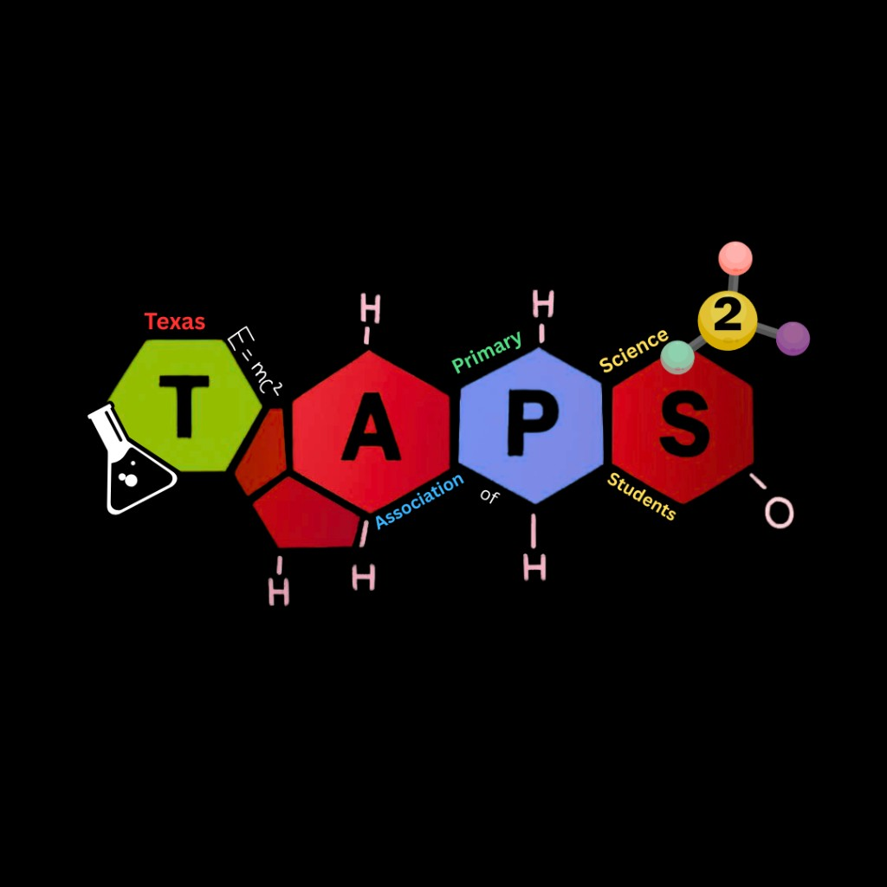
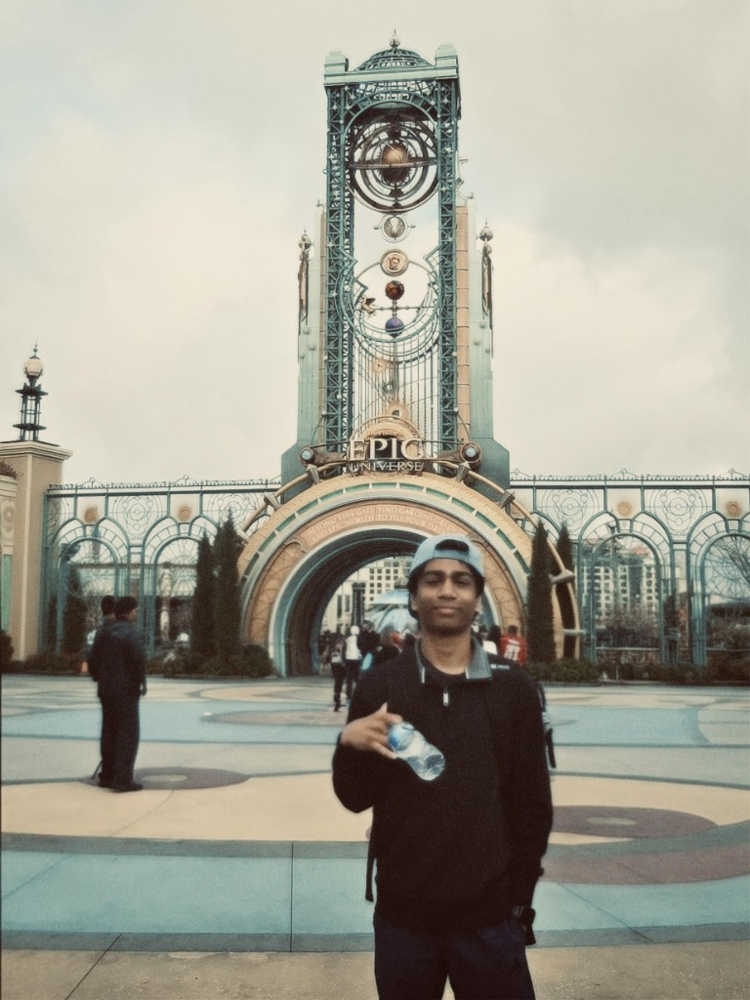
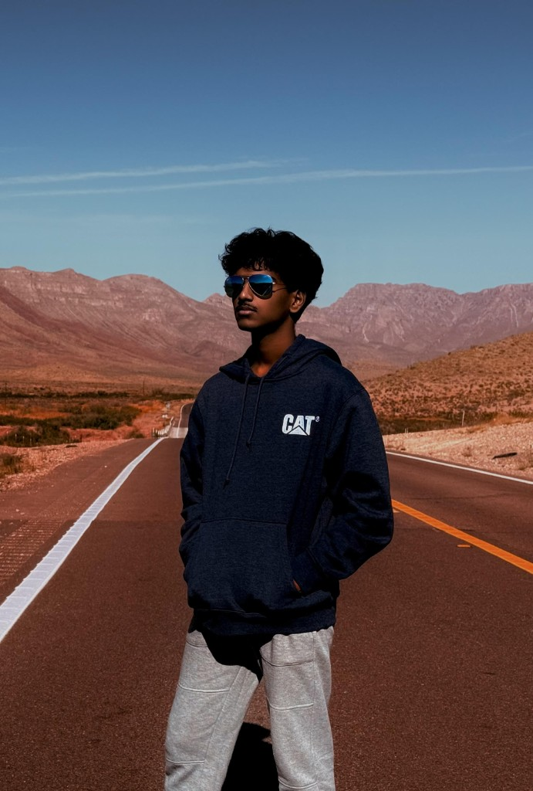
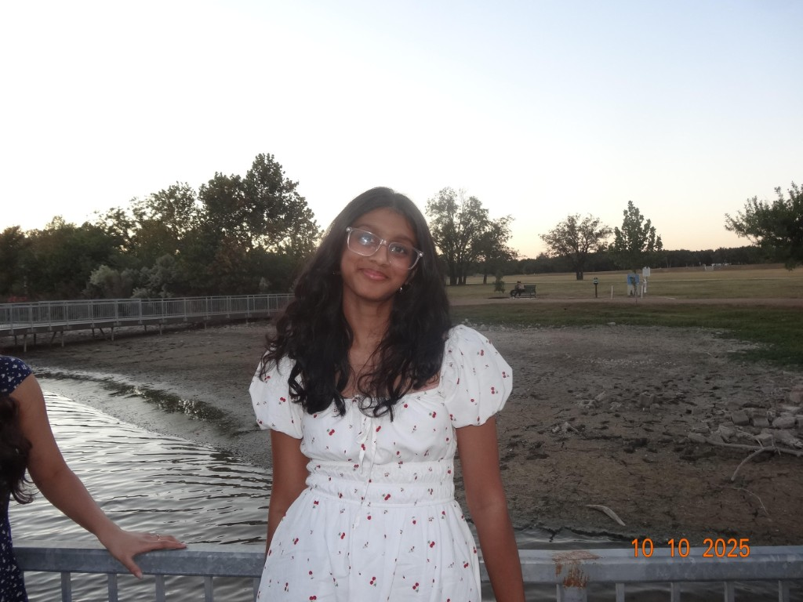
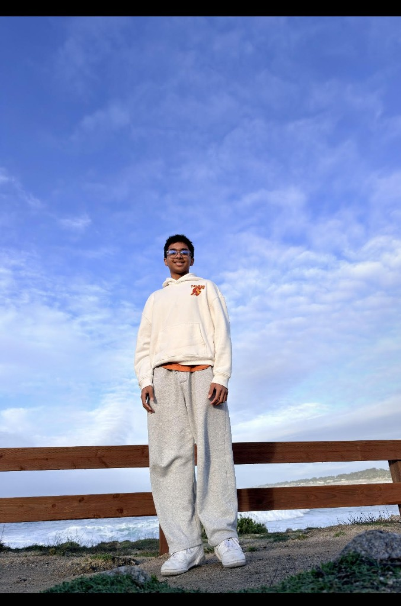
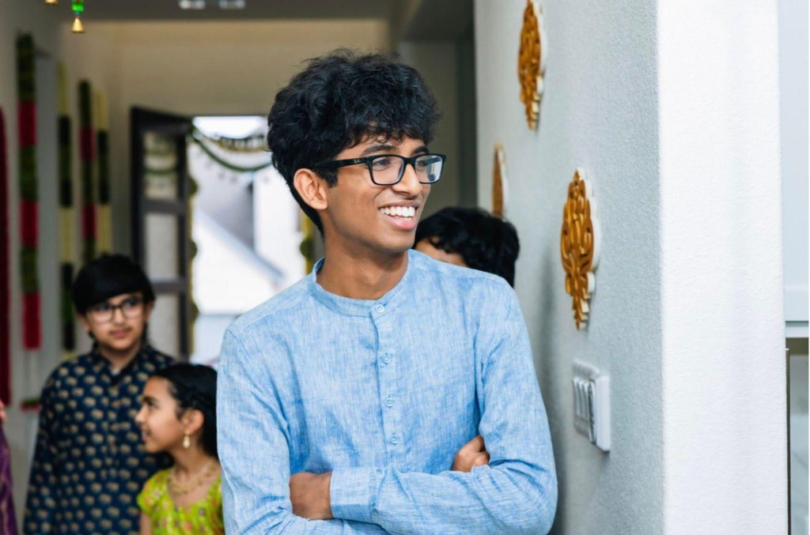
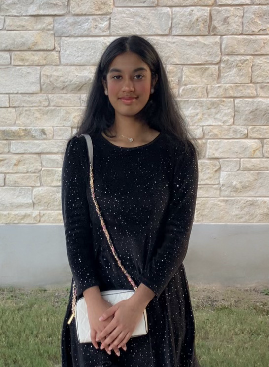
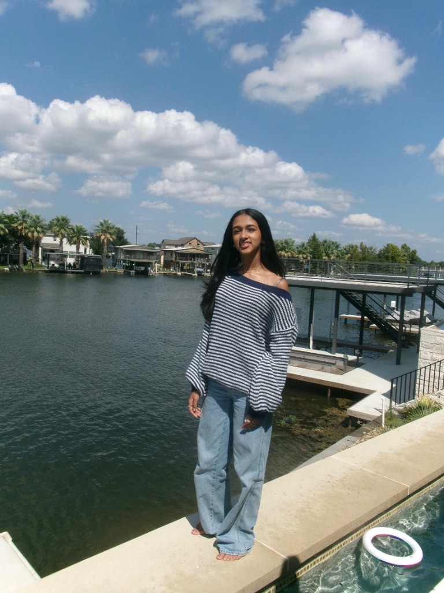
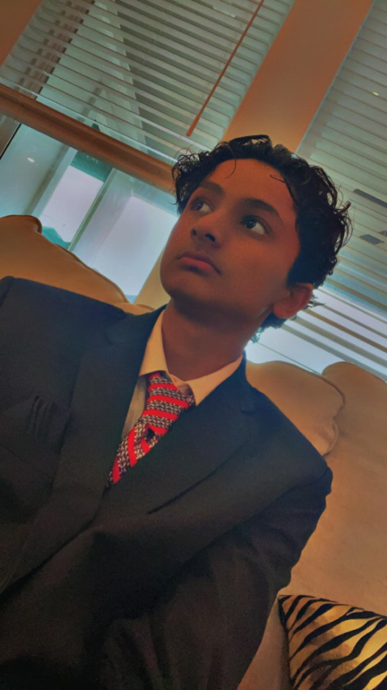
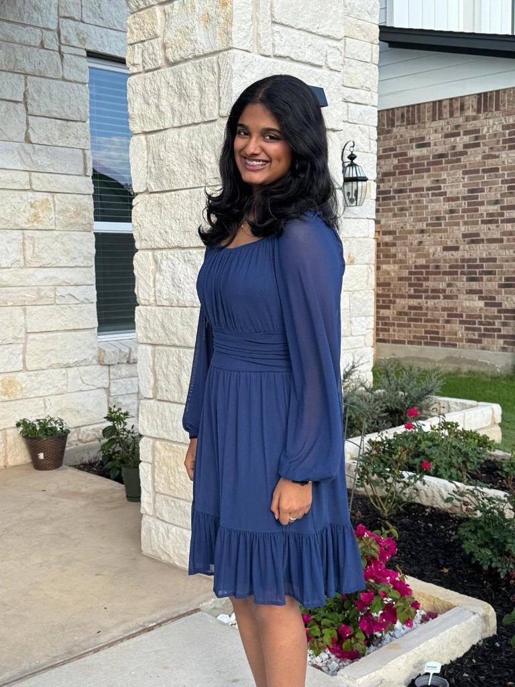

Student Science Competitions
Students design and present research-driven experiments in competitive events similar to science fairs.

TAPSS (Texas Association of Primary Science Students) is a student-led nonprofit dedicated to promoting scientific curiosity, innovation, and community impact.
Students develop and present original science experiments through competitions hosted by TAPSS. Winning projects are standardized into low-cost science kits that volunteers teach in community settings such as churches, orphanages, and youth centers.
The goal is to transform student innovation into accessible STEM education for underserved communities.
Students design and present research-driven experiments in competitive events similar to science fairs.
Winning experiments are converted into affordable kits that can be taught to children in community workshops.
Volunteers and TAPSS students teach hands-on science lessons at community sites across Austin.

Founder
Hey! I am Aniketh Adapa, and I founded the Texas Association of Primary Science Students (TAPSS) to empower student innovators to transform scientific curiosity into real-world impact. Through TAPSS, I lead initiatives that turn student research into accessible STEM education for underserved communities.

Co-Founder
I am Charan Nagireddy, the co-founder of the Texas Association of Primary Science Students. I have a strong passion for biology and enjoy exploring scientific ideas and discoveries. Outside of academics, I love playing basketball, which has helped me develop teamwork, discipline, and perseverance. I am also a confident speaker and enjoy participating in activities like Model United Nations (MUN), where I can practice debate, diplomacy, and communication. Through science, sports, and public speaking, I strive to continue learning, leading, and making a positive impact in my community.

Philanthropy Coordinator
Hi, my name is Neha Chinni, a freshman at Rouse High School! I am excited to serve as the Philanthropy Coordinator. I am super excited to be a part of this organization and look forward to contributing my time, creativity, and leadership to support its mission! I am actively involved in several other clubs including MUN, HOSA, and Speech and Debate.

Outreach Director
Hey, I'm Archit and I'm a student at Rouse High School! I am a driven and curious individual with a deep passion for technology and science, always seeking new ways to challenge myself and create meaningful impact. I bring genuine enthusiasm and a natural desire to leave things better than I found them, and I'm looking forward to contributing what I can to TAPSS.

Event Director
I am a 9th grade Event Coordinator who loves health science and STEM. I plan exciting science events to help students learn new things in fun ways. I am so happy to help our non-profit grow this year.

Co-Philanthropy Director
Hi! I'm Samrita Kolli, and I'm so excited to serve as the Co-Philanthropy Director for TAPSS. I enjoy helping organize fundraisers and initiatives that create meaningful opportunities for students. Through TAPSS, I hope to make a positive impact on students and inspire younger learners to explore and enjoy science. I'm grateful to be part of TAPSS and help make a difference through science and service.

Social Media Manager
Hi! I’m Tanvi, and I’m a freshman at Rouse High School. I’m looking forward to being the Social Media Manager for TAPSS. I’ll be managing our social media page and sharing updates about events and activities. I look forward to helping teach younger students about science and getting them excited to learn and explore new ideas!

Marketing Director
Hi, I'm Syed Hussain. I'm a freshman at Rouse specializing in strategic marketing and outreach development. Currently, I serve as the Marketing Officer for TAPSS and Outreach Director for Harmonize, where I focus on building marketing skills and community partnerships. I've always been driven by team performance, whether that's leading my basketball team to three gold medals or competing in Model UN. My goal is to bridge the gap between creative strategy and operational leadership. I'm looking to apply this competitive drive and strategic mindset to a future career in Business Management. Outside school, I find fun and peace through fishing or riding my gas bike with friends.
Secretary

Finance Coordinator
Hi! I'm Avantika and I'm a freshman at Rouse. I look forward to being one of the officers for TAPSS and helping kids experiment and enjoy science 🧪!!
Fun Fact: I want to work in London
Member
Member
Member
We're a newly developing organization. Our impact starts with you—join us to help grow these numbers from the ground up.
Answer science questions in 3 minutes. Climb the leaderboard. Top performers can win a gift card. No account required—just enter your name and play.
Play Science BlitzNames are stored encrypted. Your rank, time, points, and correctness appear after you play. Top scores can win a gift card!
| Rank | Name | Time | Points | Correct |
|---|
Names are stored encrypted. Your rank, time, points, and correctness appear after you play. Top scores can win a gift card!
| Rank | Name | Time | Points | Correct |
|---|
TAPSS is looking for passionate people who want to turn student science into community impact:
Connect with fellow student scientists, volunteers, and educators. Get updates, share ideas, and stay in the loop with TAPSS.
Join DiscordTAPSS is expanding and welcoming new members. Be part of a team that turns student science into real STEM kits for underserved communities. Fill out our membership form and start making an impact today.
Become a Member